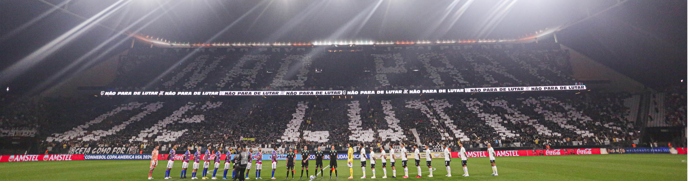
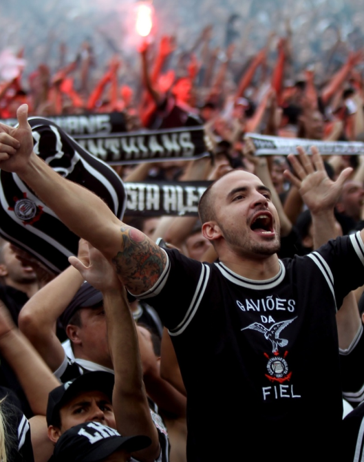
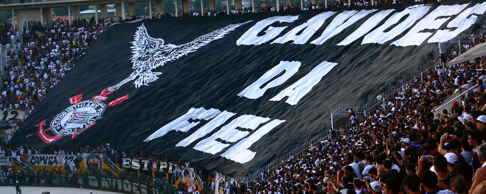

Quem somos

Gaviões da Fiel
O Grêmio Gaviões da Fiel Torcida é a maior torcida organizada do Sport Club Corinthians Paulista. Além disso, é considerada a maior organizada do Brasil.
Torcida:
- Principal atividade: acompanhar o Corinthians em todos os jogos
- Número de sócios: 115 mil (dezembro/2018)
- 1 sede social e 10 subsedes (sendo 9 no Brasil e 1 no Japão)
- Fontes de receita: mensalidade, bar, cantina, loja física e virtual, e eventos
Carnaval:
- 1975: Criação do Bloco Carnavalesco - 12 títulos conquistados em 13 anos de bloco
- 1988: A Liga das Escolas de Samba convida os Gaviões para concorrer ao grupo especial - 4 títulos conquistados no Carnaval de SP
- 3.500 componentes no desfile de 2019
- Maior audiência da TV e a maior torcida no Anhembi
- Fonte de receita: patrocínios e ensaios.
Responsabilidades Sociais
Os Gaviões da Fiel, por meio do seu Departamento Social, têm como objetivo prover atividades e ações sociais que vão além das arquibancadas, visando o envolvimento com a comunidade local e familiar dos membros associados da entidade com ações e projetos realizados durante todo o ano.
Algumas atividades já são tradição da Torcida como:
Campanha do Agasalho
Realizada há mais de 20 anos em conjunto com subsedes e pontos de encontro em todo o país, atendendo cerca de 10.000 pessoas com roupas de frio e cobertores.
Festa das Crianças
Realizada no mês de outubro na sede, com shows, brincadeiras e distribuição de brinquedos e lanches para 2.000 crianças da região de São Paulo.
Confira abaixo as principais atividades:
- Projeto de Inclusão Digital
- Projeto Escolinha da Bateria
- Campanha do Agasalho, Páscoa, Doação de Sangue, Dia da Saúde e Natal (realizadas anualmente)
- Festas comemorativas para celebrar o Dia das Mães, Dia dos Namorados, Dia dos Pais e Dia das Crianças
- Parcerias com universidades e instituições
- Corrida de Rua
Ideologia
"Nós somos os Gaviões da Fiel."
Força independente em prol do grande Corinthians (Flávio La Selva – sócio nº. 1 dos Gaviões da Fiel)
“Nosso lema está expresso em nossa própria designação – força–independente nosso verdadeiro ideal.
Lutamos, vibramos, torcemos e seguimos todas as atividades esportivas nas quais o Corinthians esteja presente, procurando sempre colaborar com a mística corinthiana, seja um fator concreto de desenvolvimento moral e físico.
Se a nossa presença pioneira nos estádios leva a vibração e o alarido da geração moderna durante o espetáculo, não é menos verdade que, como participantes efetivos da família corinthiana, com a qual colaboramos em tudo, inclusive financeiramente, nos reservamos o direito inalienável de participar da vida política e administrativa do clube, atuando atráves da observação que fazemos dos atos e atitudes dos dirigentes – simples mandatários da vontade da grande massa corinthiana – aplaudindo, orientando e criticando quando isso atende aos interesses maiores do nosso clube.
Observamos, esclarecemos e atuamos, conforme o fizemos quando da vitória da revolução corinthiana, cujas realizações e atos seguimos atentamente, reservando-nos o direito de opinar na hora oportuna.
Nascemos num momento de desalento, quando até a própria torcida parecia não mais acreditar no grande Corinthians. Nós acreditamos sempre e por isso partimos para a luta. Luta que sempre existirá, pois o ideal de perfeição é eterno. Quando adentrarmos nos estádios, poucos podem calcular quanto de sacrifício nos custa: financeiro, de trabalho, de despreendimento pessoal, etc. mas vamos continuar sempre: hoje, amanhã, depois, pois sempre existirá o grande e eterno Corinthians.”
Nosso lema: Lealdade, Humildade e Procedimento (Roberto Daga – sócio nº. 3 dos Gaviões da Fiel)
“Dia 1º de julho de 1969, marca a data oficial da fundação do Grêmio Gaviões da Fiel Torcida. Um grupo de corinthianos autênticos que vieram a se conhecer nas gerais dos estádios onde o Corinthians se apresentava e isto lá pelos anos de 1965. Movidos pelo ideal de colaborar com a vida do clube, não só incentivando o time mas também, participando efetivamente da vida política administrativa do Sport Club Corinthians Paulista. Enquanto torcia pelas vitórias, fiscalizava o dia-a-dia do clube e denunciava os demandos.
Gaviões da Fiel e Corinthians são um só coração. Este ideal de participação nada mais é do que o exercício do direito de influenciar, e dar aos mandatários do clube, a legitimidade ao mandato exercido, e ao mesmo tempo obrigá-los à cumprir os verdadeiros anseios na Nação Corinthiana. Fomos poucos no começo. Hoje somos milhares, a maior torcida organizada do país.
Todo gavião precisa de um ninho. Em nosso caso, desde 1969, as arquibancadas dos estádios do Brasil tornaram-se o verdadeiro reduto alvinegro. Nesse “habitat” corinthiano temos a função de gritar os 90 minutos em prol de nossa ideologia mosqueteira. Ser Gavião é amar e lutar pelos cores do Coringão, não importando se existem ditadores contrários a nossa filosofia. Preto e branco são reflexões de uma vida inteira de dedicação, glórias e, acima de tudo de muita paixão pelas cores do Sport Club Corinthians Paulista. Hoje essa união de corações, chamada GAVIÕES DA FIEL, formam a maior, melhor, mais respeitada e invejada torcida organizada do país. E a anos seguimos o mesmo lema… LEALDADE – HUMILDADE – PROCEDIMENTO.
Nascemos num momento de desalento, quando até a torcida parecia não acreditar no Corinthians. Nós acreditamos sempre, por isso partimos para a luta. Uma luta que sempre existirá pois o ideal de perfeição é eterno. Nosso lema está expresso em nossa própria designação (Força Independente). Lutar, vibrar, torcer e seguir todas as atividades esportivas nas quais o Corinthians esteja presente, buscando o ideal de participação da torcida. Nas vitórias ou nas derrotas procurando sempre colaborar para que a mística corinthiana, construída por tantos abnegados, seja um fator concreto, de desenvolvimento moral e físico, dentro do mundo esportivo. Obs. o gavião se for preciso protesta, mas nunca vaia o time e também não grita olé contra sua camisa.
Desde a nossa fundação segue o lema: “Seja mais corinthiano, seja um gavião”. Nossa função há mais de 30 anos é de observar, esclarecer, e atuar conforme fizemos desde a revolução corinthiana, cujas realizações e atos seguimos atentamente. Reservando-nos o direito de opinar na hora oportuna. Quando adentramos nos estádios, poucos podem calcular quanto de sacrifício isso nos custa: financeiro, profissional, desprendimento pessoal, etc. Mas vamos continuar, hoje e amanhã, pois sempre existirá o grande e eterno Corinthians. Nós somos os GAVIÕES DA FIEL.”
